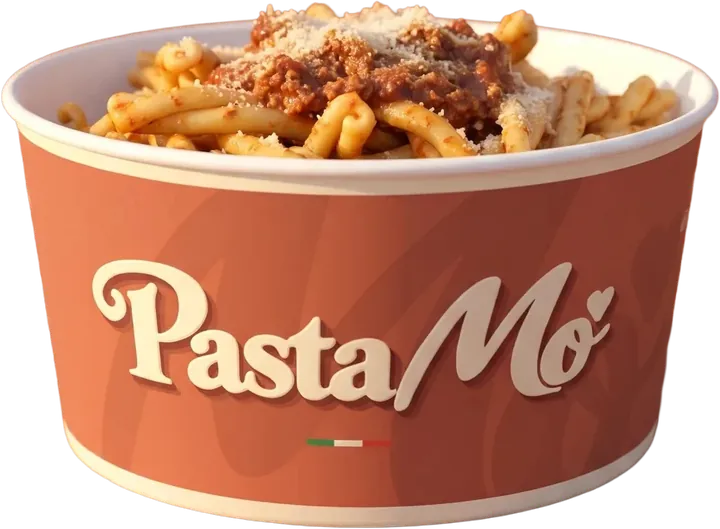
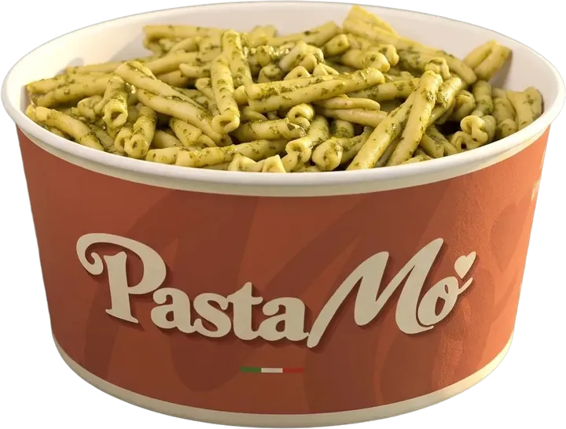
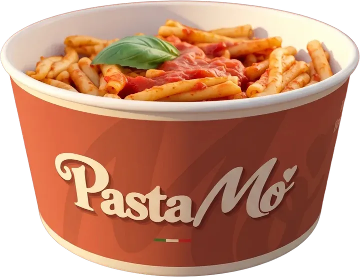
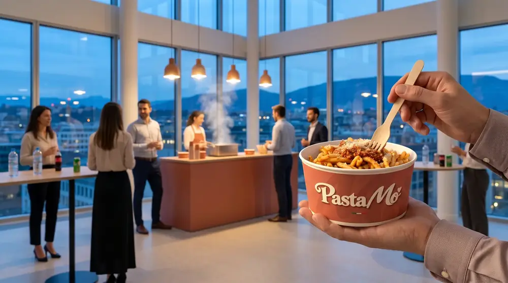
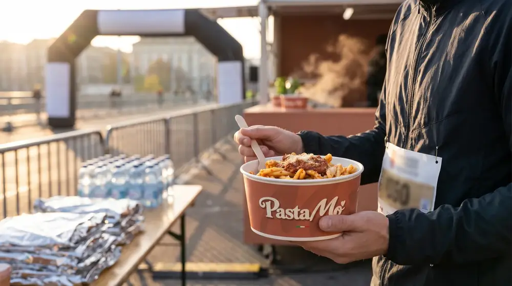
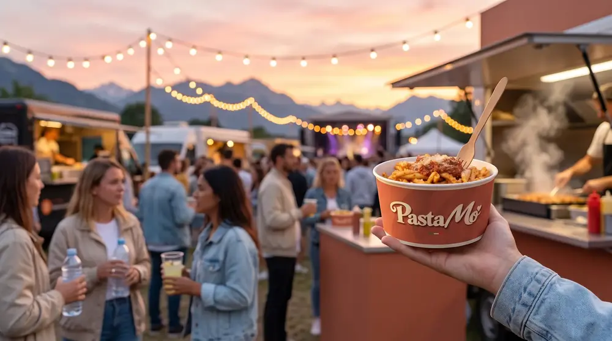

Nos trois sauces : Bolognese, Pesto Verde et Pomodoro
BolognesePestoPomodoro
Sauce fabriquée à Genève
Ragù de bœuf, mijoté longtemps.Végétarien, préparé à froid.Végétarienne, sans piquant. La préférée des enfants.
Trois sauces, fabriquées à Genève



Où l'on nous croise
Partout où l'on se rassemble.

Entreprises
Afterworks, séminaires, journées clients : un repas chaud qui rassemble vos équipes.

Événements sportifs
À l'arrivée, une portion chaude pour les coureurs et le public.

Festivals
Jusqu'à 150 portions par heure et par poste, même quand la file s'allonge.
Fêtes communales et marchés
Une carte courte qui plaît à toute la famille.
Visuels provisoires, en attendant les photos de nos prochains événements.
Comment ça se passe
Simple pour vous, sympa pour eux.
Vous nous écrivez
Type d'événement, date, lieu, nombre de personnes.
On vous envoie une proposition
Une formule et un devis détaillés, dès 20 convives.
On s'installe, on sert, on range
Intérieur ou extérieur : on fait le point avant sur l'emplacement, l'électricité et l'eau.
Notre histoire
Pasta Mo', c'est Morgane.
Ses racines sont italiennes et, chez elle, la cuisine se transmet en famille : les sauces qu'elle prépare aujourd'hui viennent de ces recettes. Son idée : un stand simple, de bonnes pâtes fraîches d'un artisan genevois, trois sauces fabriquées à Genève, et un service qui suit le rythme de vos événements.
Questions fréquentes
Avant de nous écrire.
Pasta Mo', c'est quoi ?
Un stand de street food italienne basé à Genève. Nous servons des pasta box : des pâtes fraîches d'un artisan genevois, avec trois sauces fabriquées à Genève, Bolognese, Pesto et Pomodoro.
Pour quels événements faites-vous traiteur ?
Festivals, événements sportifs, événements d'entreprise (afterworks, séminaires, portes ouvertes), fêtes communales, marchés, mariages et anniversaires. Nous assurons le service traiteur sur place, avec notre stand.
Où vous déplacez-vous ?
Dans toute la Suisse romande. Hors du canton de Genève, le déplacement est indiqué dans le devis.
Combien de personnes pouvez-vous servir ?
Jusqu'à 150 portions par heure et par poste, de la fête de quartier au grand festival.
Pouvez-vous vous installer dans nos locaux ?
Oui, à l'intérieur comme à l'extérieur. Avant l'événement, on fait le point avec vous sur l'emplacement, l'électricité et l'eau.
Comment est calculé le devis ?
Selon le nombre de convives et la formule choisie, dès 20 convives. Vous recevez une proposition claire avant de vous engager.
Avez-vous des options végétariennes ?
Oui : le Pesto Verde et la Pomodoro sont végétariens. Nos pâtes fraîches contiennent des œufs, nous ne proposons donc pas d'option vegan.
Comment demander un devis ?
Avec notre devis en ligne, en écrivant à ciao@pastamo.ch ou en appelant le 078 213 38 68. Indiquez la date, le lieu et le nombre de personnes : nous revenons vers vous avec une proposition claire.
Votre prochain événement a besoin de pâtes.
Dites-nous la date, le lieu et le nombre de personnes (dès 20 convives). On revient vers vous avec une proposition claire.
ciao@pastamo.ch · Instagram @pastamo.ch · Précommander ma box